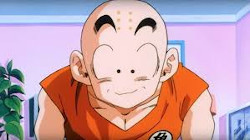

Piccolo, conocido también como Ma Junior, es uno de los personajes principales que aparece en el manga y anime de Dragon Ball y sus correspondientes secuelas.
Es un namekiano que surgió tras ser creado en los últimos momentos de vida de su padre, siendo su actual reencarnación. Aunque en un principio fue el archienemigo de Son Goku, con el paso del tiempo fue haciéndose menos malvado hasta finalmente convertirse en un ser bondadoso y miembro de los Guerreros Z. A través del tiempo, también comenzó a tomarle cariño a su discípulo Son Gohan, a quien veía como una especie de "vástago" y formando un lazo de amistad con este.
Piccolo, además de ser una representación de una babosa verde de Mozambique, está inspirado en un héroe de Akira Toriyama el cual combatía en sus pesadillas, curiosamente con el monstruo que inspiró a la creación de Freezer y de su raza.
La característica más notable en Piccolo es su tono de piel, que es de color verde. Tiene unas orejas muy grandes y unas antenas en lo alto de su cabeza. En los brazos y piernas lleva unas especies de círculos de color rosa (amarillo en el manga), cuyo contorno es de color rojo. De pequeño usaba una túnica morada con mangas largas de color orquídea y el kanji de 'Demonio ' de su padre en la túnica. Al crecer, lleva un dogi de color morado, cinturón de color azul (rojo en el manga y algunas películas) además de unos zapatos marrones. También usa capa blanca y un turbante color nieve con un tope púrpura que llevan peso extra encima, emulando la camiseta y aditamentos de Kami que utilizaba Goku. Se suele quitar la capa y el turbante cuando va a pelear en serio ademas en el episodio 125 de Dragon Ball Z se le ha visto usar una ropa de civil: una camisa manga larga morada y una amarilla sobre ésta con pantalones grises y una gorra azul, blanca y roja.
Piccolo es un namekiano de 226cm de estatura y que pesa 116kg.
Piccolo fue originalmente villano, al igual que su padre. Durante el Torneo de Artes Marciales 23, él casi no muestra misericordia a sus oponente, como cuando rompe todos los miembros de Goku mientras se reía con sadismo, creyendo que era necesario después de lo que Goku había hecho a su padre. A pesar de esto, él poseía un sentido del bien, una vez salvo una madre y su hijo de los escombros durante una tormenta. Más tarde, cuando él y Son Goku van a la batalla Raditz, Piccolo empezó a mostrar más honor durante la batalla, incluso conmemorando a Goku en su noble sacrificio y durante la batalla contra Nappa, elogió la valentía y las tácticas de los otros Guerreros Z. A pesar de su cambio gradual hacia una actitud heroica, Piccolo todavía puede ser grosero y confrontacional hacia las personas que estime tontas, inferiores o innecesariamente violentas, además es muy directo y honesto al dar sus opiniones sobre una situación o un individuo, aunque se pueden considerar muy despectivo. En el doblaje latinoamericano, se suele utilizar la palabra "sabandija" para denotar ésto.
Después de entrenar y hacerse amigo y mentor de Gohan, su personalidad rápidamente cambia a medida que el saiyan híbrido toma su tiempo para hablar con él y tener conversaciones normales. Durante la batalla con Nappa, Piccolo va tan lejos como para sacrificar su vida para salvar a Gohan, indicando cómo su amistad lo había cambiado para siempre. Piccolo ha declarado que Gohan fue la primera persona en no verlo como un monstruo y estaba orgulloso de llamarlo su amigo.
Durante la Arco de los Androides y Cell sigue teniendo una personalidad algo arrogante, al punto de decir que solo está utilizando a los Guerreros Z para así algún día conquistar el mundo (lo cual Krilin despreocupadamente sabía que eran puras habladurías). Después de fusionarse con Kami se vuelve más bondadoso, demostrando sufrimiento cada vez que matan a mucha gente, como fue el caso con Cell y posteriormente con Boo Gordo, incluso hasta siente culpa cuando le dice a Super-Boo que aun le quedan humanos por matar (para darles más tiempo de entrenar a Goten y Trunks).
Piccolo demuestra ser analítico y estratégico en la batalla. Aprende rápido de sus errores y utiliza bien todos los recursos a su disposición, lo cual compensa su falta de transformaciones como tienen los Saiyan o la Raza de Freezer. Tras su fusión con Kami, se vuelve mucho más sabio al adquirir todos sus conocimientos a tal punto que aprende los puntos débiles de Goku y de los Guerreros Z, tal como se lo manifiesta a Goku cuando le menciona que de joven él no podía soportar mucho tiempo en el Salón del Tiempo. No obstante, mantiene aún su actitud de lobo solitario similar al Androide 17, y solo se abre con muy pocos personajes como lo son Gohan, Dende e incluso cuando ayuda a criar a la bebé Pan. Se ha demostrado que es muy observador, cuando observa los puntos débiles de los pasos de la fusión de Trunks y Goten.
|
|
|
|
 |
|